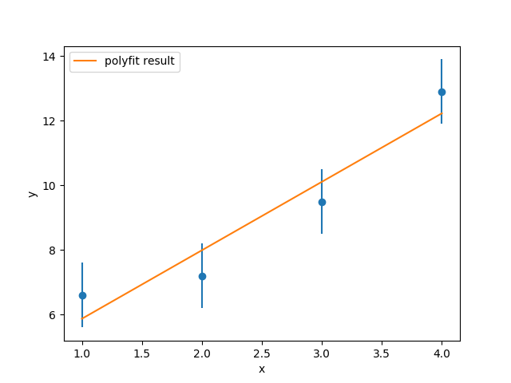

For an excellent review of fitting, please see Chapter 15 of Numerical Recipes. The FORTRAN and C versions of this book are available for free download over the internet. I highly recommend it!
For starters, lets have a quick look at fitting in Numpy. Prepare a text file called “pts.dat” with three columns of text data, as follows:
# x y sigy 1.0 6.6 1.0 2.0 7.2 1.0 3.0 9.5 1.0 4.0 12.9 1.0(I just made these numbers up.) Have a look at the Matplotlib example errorbar_demo.py. Use this to create a Python script to read in data from pts.dat and plot the points with the sigy column as errorbars. Be sure to use the fmt='o' option or Matplotlib will also do a connect-the-dots with your points.
Its easy enough to superimpose a straight line on this graph. For example,
plt.errorbar(x, y, yerr=0.4, fmt='o') a = 4.0 b = 1.0 straightline = a + b*x plt.plot(x,straightline) plt.show()Try varying a and b to see if, by trial-and-error, you can obtain a reasonable “fit” (one that passes through all the errorbars) to these points.
Now, let Numpy have a shot at it. The simplest thing is to remember that a line is a polynomial of order 1, and use the numpy.polyfit function:
z = np.polyfit(x, y, 1) b = z[0] a = z[1] straightline = a + b*x plt.plot(x,straightline)Compare the values of a and b to your trial-and-error guesses.

Note however that while numpy.polyfit is very easy to use, it lacks some desirable features. For one thing, it assumes that the errorbars on all points are the same size. For another, it does not provide any information on the quality of the fit itself.
Now, we will create a dataset and fit it to a curve using the more powerful scipy.optimize.curve_fit function, and also use the result to quantify the quality of the fit.
Download and execute the notebook fitacurve.ipynb. This notebook starts by illustrating how to generate an artificial data set with Gaussian-distributed errors. The data may be thought of as representing the number of nuclear decays in uniform time intervals, as measured in the vicinity of a radioactive source.
Now, following the hints given in the notebook, extract fit parameters and goodness of fit as follows: